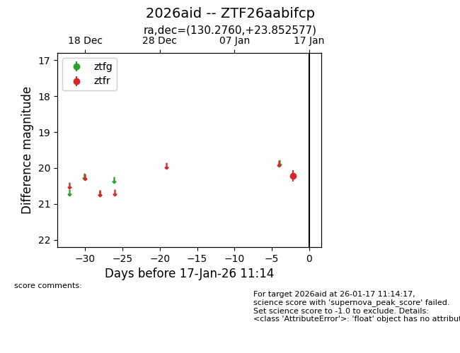
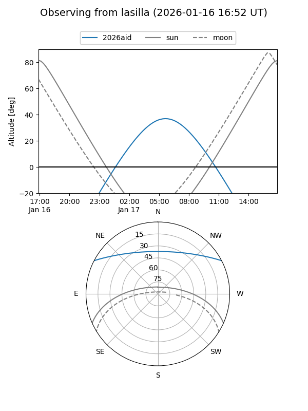
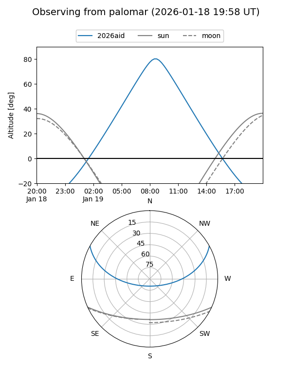

2026aid
Target 2026aid at 2026-01-17 11:15
Aliases and brokers:
FINK: link
Lasair: link
ALeRCE: link
TNS: link
YSE: link
alt names
ZTF26aabifcp (ztf,fink_ztf)
2026aid (tns,yse)
Coordinates:
equatorial (ra, dec) = 130.2760,+23.85258
equatorial (HMS+DMS) = 08:41:06.23,+23:51:09.28
galactic (l, b) = (201.2494,+33.99987)
Flags:
Photometry:
last ztfr=20.22
1 ztfr detections
Lightcurve

Visibility


Additional plots